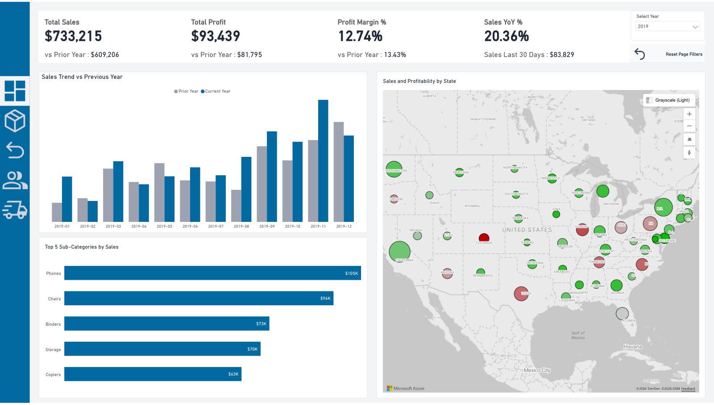
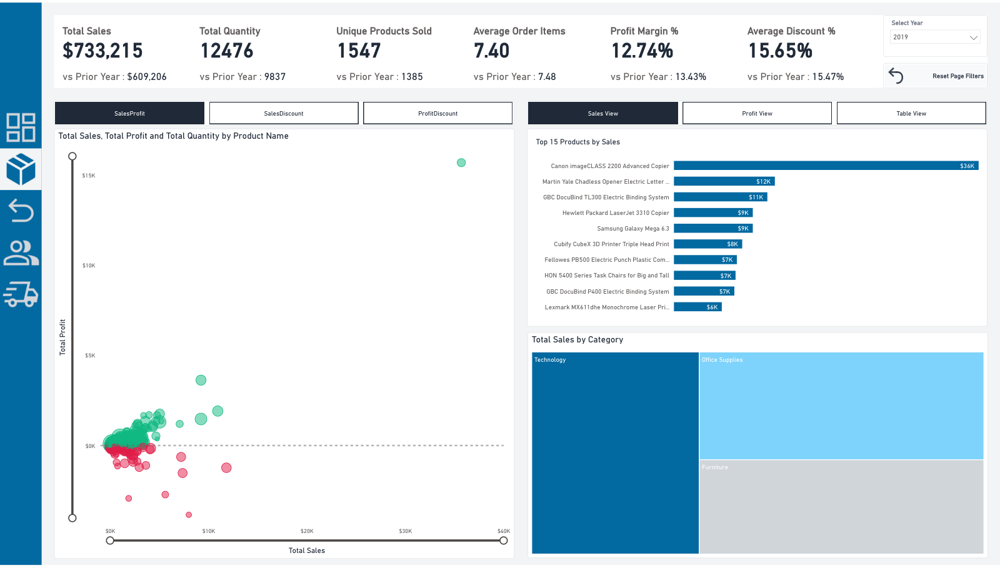
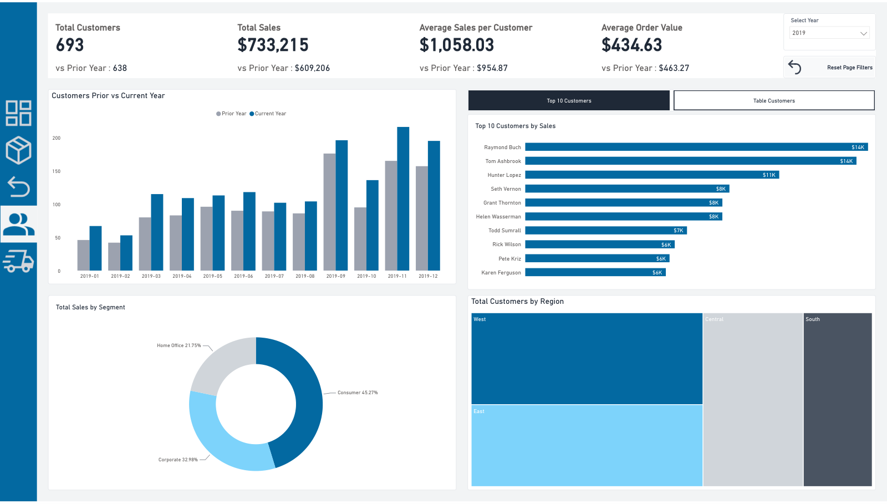
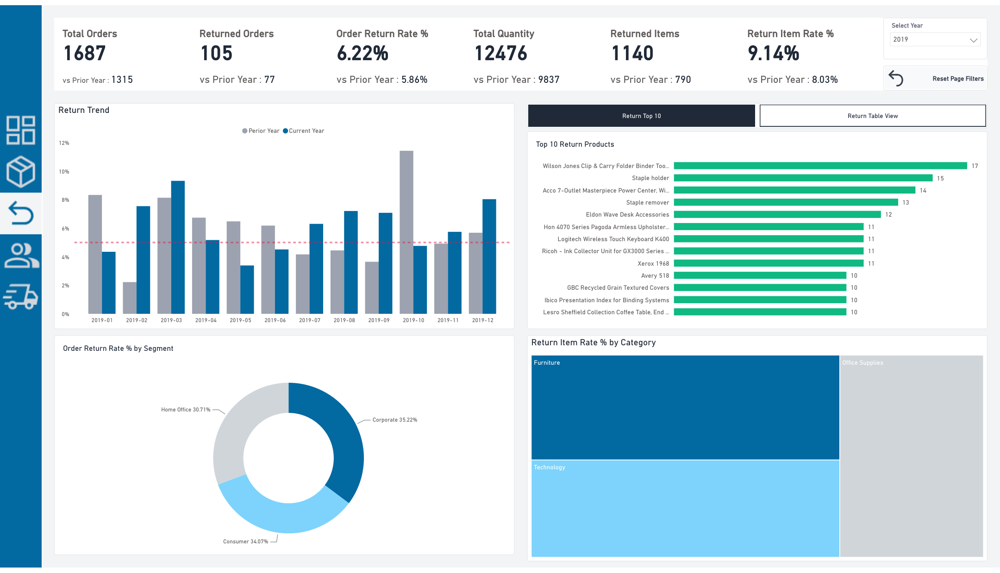
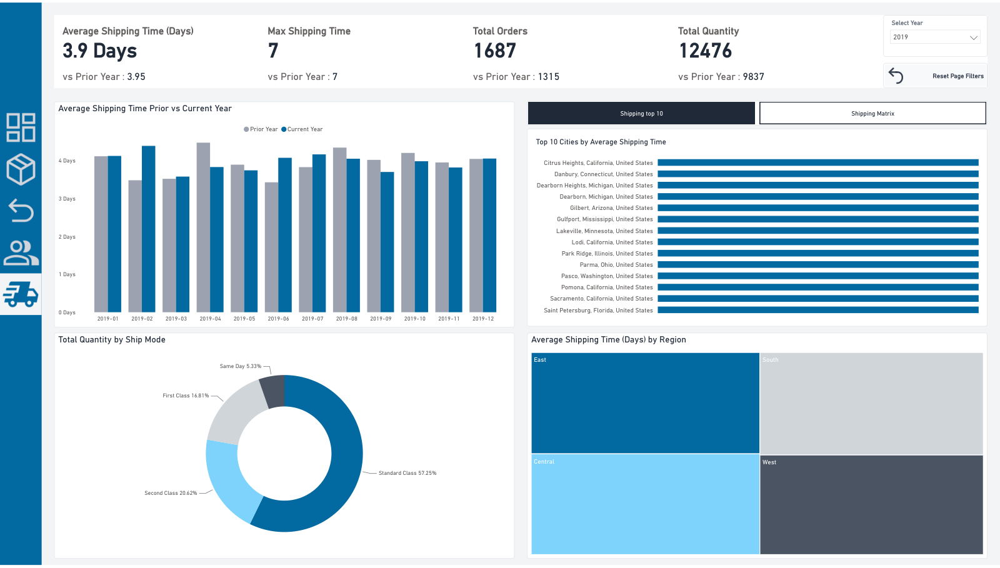

Junior Data Analyst & Analytics Engineer | Power BI · SQL · Python
Transforming complex datasets and raw records into reliable relational architectures, automated ETL pipelines, and decision-ready Power BI cockpits.
View Projects Get In TouchBridging data engineering precision with analytical research thinking.
I am a Junior Data Analyst and Analytics Engineer currently training in the Digital Egypt Pioneers Initiative (DEPI Round 5), alongside my academic medical studies at Al-Azhar University.
I don't just visualize surface metrics — I architect the entire data lifecycle. From programmatically extracting and cleaning 15 years of regulatory financial records with Python, to engineering normalized 9-table Star Schemas in MySQL with 121,000+ verified rows, and building interactive Power BI dashboards with drill-through navigation engines.
Currently, I serve as Team Leader, Lead Data Architect & QA Manager for our DEPI graduation project, directing a 6-member team on the Financial Risk Early Warning System analyzing 20 major US commercial banks across 60 quarters.
Academic foundations and analytical clinical research methodology.
Core technical stack across data engineering, relational modeling, and business intelligence.
Hands-on technical leadership and end-to-end project execution.
Concrete data solutions delivered for businesses and clients.
Transform disjointed spreadsheets into interactive, multi-page analytical cockpits with custom grid layouts, dynamic DAX measures, field parameters, and drill-through navigation.
Design normalized relational databases (MySQL/PostgreSQL) and dimensional models (facts and dimensions) optimized for analytical speed and clean reporting.
Build automated Python scripts (Pandas, NumPy) and Power Query pipelines that detect outliers, deduplicate records, fix broken formats, and output audit-ready datasets without manual human error.
Develop automated scrapers (BeautifulSoup, Requests, APIs) to extract public registries, market benchmarks, and web archives into structured databases and CSV files.
Deep case studies demonstrating data cleaning, web scraping, modeling, and dashboard design.





Whether you need automated Python data cleaning, web scraping, a clean MySQL Star Schema, or an executive Power BI dashboard, let's connect and discuss your project.